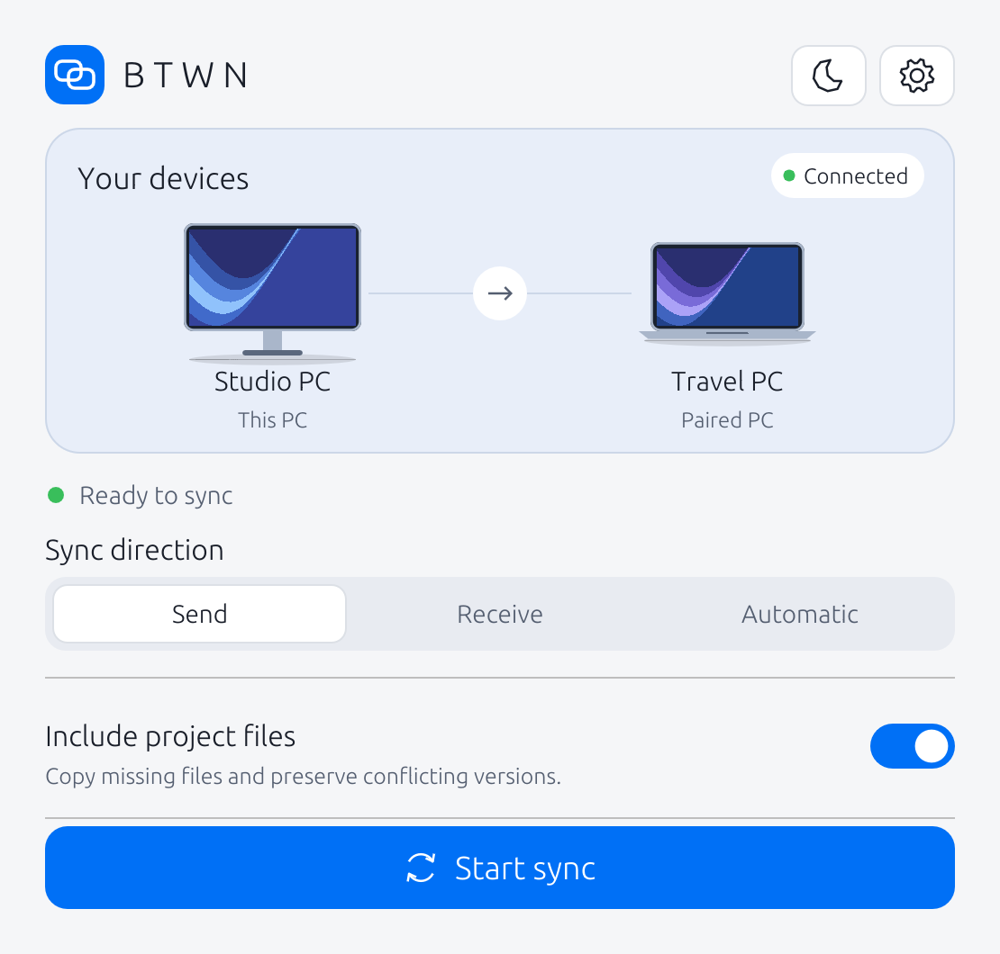
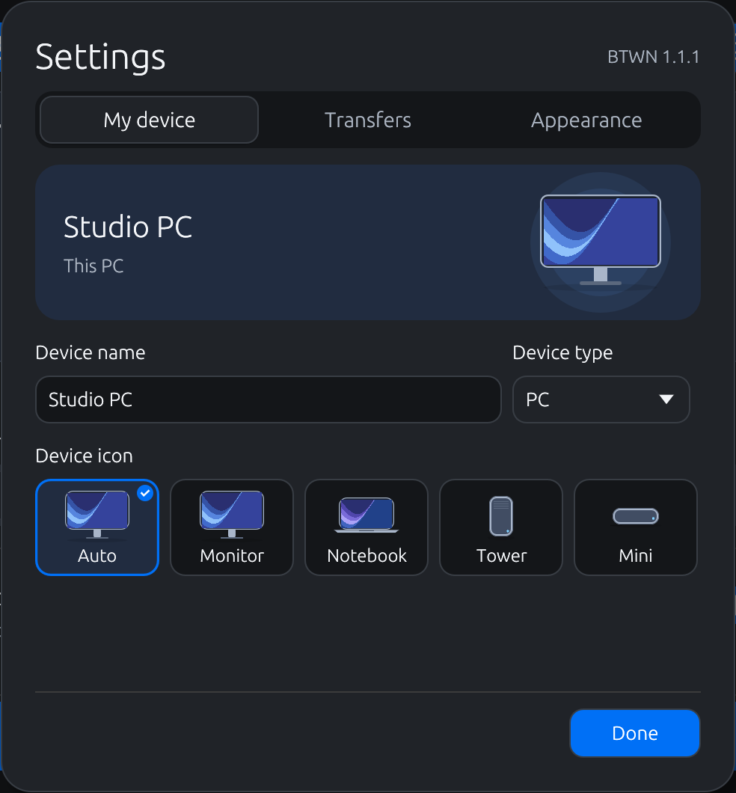

Choose a direction.
Send from this PC, receive from its partner, or let Automatic check both. Include project files when you need them.

Pick up your local Codex projects on either Windows PC. Your chats, files, and sidebar travel together over your own network.
Inside the app
One pair of PCs. Choose what moves between them and see when it arrives.
Send from this PC, receive from its partner, or let Automatic check both. Include project files when you need them.

Both PCs show the progress reported by the receiver. Try a transfer with sample data here in your browser.
Give each device a name, type, and icon. Switch between light, dark, or your Windows appearance.

Getting started
Install BTWN and open Codex once on each PC. Save a local chat so each profile is ready.
Join the same private network. Create a pairing file on one PC, share it privately, and open it in BTWN on the other.
Fully quit Codex on both PCs. Choose Send in BTWN, then Start sync. Reopen Codex when the receiving PC confirms.
BTWN for Windows
Free and open source. Windows x64.